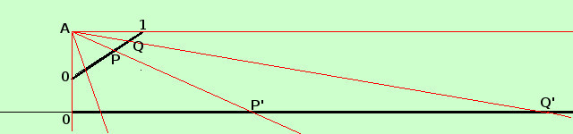

|
sviluppo dimostrate che un segmento di ℜ, limitato, ha lo stesso numero di punti di una semiretta in ℜ Per dimostrarlo devo porre il segmento e la semiretta in corrispondenza biunivoca fra loro in modo che ad ogni punto del segmento corrisponda un punto della semiretta e viceversa Faccio la dimostrazione per il segmento [ 0, 1 ] e la semiretta [ 0, +∞ [ Naturalmente la dimostrazione puo' essere estesa a qualunque altro segmento limitato e qualunque altra semiretta in ℜ Su un piano traccio la semiretta [ 0, +∞ [ e, in verticale dall'origine 0 della semiretta considero l'estremo 0 del segmento, tracciando poi il segmento [ 0, 1 ] obliquamente rispetto alla retta e dalla parte della retta stessa (a destra)  dagli estremi del segmento mando la parallela e la perpendicolare alla semiretta che si incontreranno nel punto A se ora considero un fascio di rette con centro in A le rette che incontreranno un punto P del segmento [ 0, 1 ] incontreranno anche un punto P' della semiretta [ 0, +∞ [ e, viceversa le rette che incontreranno un punto Q' della semiretta [ 0, +∞ [ incontreranno anche un punto Q del segmento [ 0, 1 ] Quindi abbiamo una corrispondenza biunivoca fra i punti del segmento e i punti della semiretta: ad ogni opunto del segmento corrisponde un punto sulla semiretta e, viceversa, ad ogni punto della semiretta corrisponde un punto del segmento; quindi semiretta e segmento hanno lo stesso numero di punti Naturalmente avere lo stesso numero di punti nel caso di insiemi infiniti non ha molto significato: ricordati che ∞ e' solo una convenzione Da notare che la retta passante per l'estremo 1 del segmento e' la parallela alla semiretta e possiamo dire che la incontra all'infinito (diremo che due rette parallele hanno in comune un punto all'infinito) |